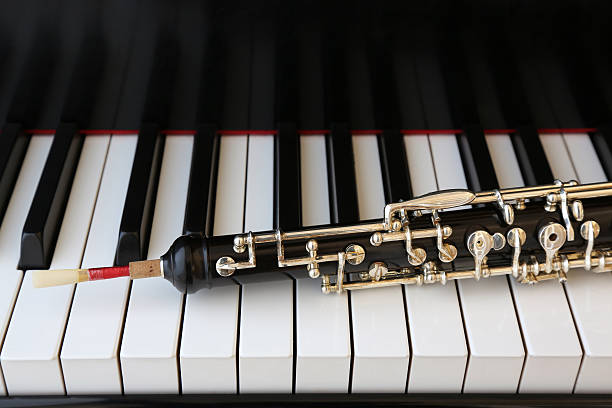

Oboe
Oboes are classified as double-reeded aerophones. They make sound by blowing air through a double reed, vibrating the two reeds that are pressed together and causing the sound waves to be sent down the horn. The pitch of the note is determined by keys pressed down which opens and closes holes along the body of the instrument.

Classical Applications
The oboe has a very distinctive and piercing double reed sound that is known for its singing-like, wistful tone. This leads to the oboe being melodic and typically a solo instrument. Due to its sound, it is typically applied for sad and poignant moments in pieces.
Famous Piece
Happy Together is a fairly popular pop song by The Turtles. It features many woodwinds and percussion to create its peppy soundscape. One of the more unique instruments it employees is the oboe as a counter-melody to the main lyrical melody of this section.
Fun Fact!
Due to the high price of double reeds, professional oboists typically learn how to make their own. The process involves taking blades of cut cane, soaking them, shaping them using reed carving tools, and tying them to cork pieces. This also allows them to fine tune the reed to their needs.